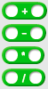
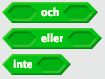
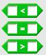
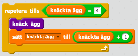
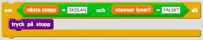

En operator är en instruktion som tar ett eller flera värden och omvandlar dem till ett nytt värde
En operator är en matematisk instruktion eller funktion som använder sig av en eller flera ingångsvärden och omvandlar dem till ett nytt utgångsvärde. Det finns olika typer av operatorer i ett program och de vanligaste är
Aritmetriska operatorer, vilka du säkert känner igen från skolan eftersom de är + (addition), – (subtraktion), * (multiplikation) och / (division)
Logiska operatorer som jobbar med booleska variabler som kan vara antingen SANT eller FALSKT. De vanligaste logiska operatorerna är OCH, ELLER och INTE
Jämförelse operatorer, som jämför om två värdena är lika (=) eller olika, eller om ett annat värde är större (>) eller mindre (<) än ett annat värde. Dessa operatorer ger tillbaka ett booleskt värde SANT eller FALSKT
Det logiska och jämförelse operatorerna används oftast med en OM-sats för att utvärdera ett villkor.

Vardagsexempel
När du lagar pannkakor använder du operatorer hela tiden utan att du tänker på det. Tänk att du ska knäcka i 4 ägg i smeten. Då räknar du hela tiden upp i huvudet hur många ägg du har knäckt: 1 ägg, 2 ägg, 3 ägg och 4 ägg – nu är jag klar. Har du gjort detta har du använt både en artimetiska operator + (addition) och en jämförelse operator = (lika) för att kolla om antalet knäckta ägg är lika med det antalet ägg som står i receptet.

I en algoritm som går ut på att åka buss till skolan finns det flera operatorer som du använder. Tänk dig att du vill kliva av på nästa hållplats, då behöver du trycka på Stopp-knappen men bara om den inte redan är tryckt. Då använder du dig av en logisk operator OCH samt ett villkor för att avgöra om du ska trycka på knappen. Du har också använt dig av jämförelse operatorer (=) för att kolla om nästa stopp är skolan och om "Stannar”-skylten lyser.
